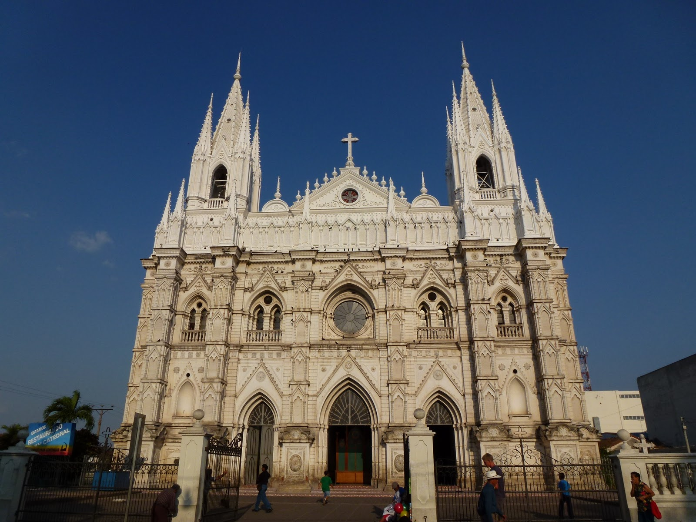
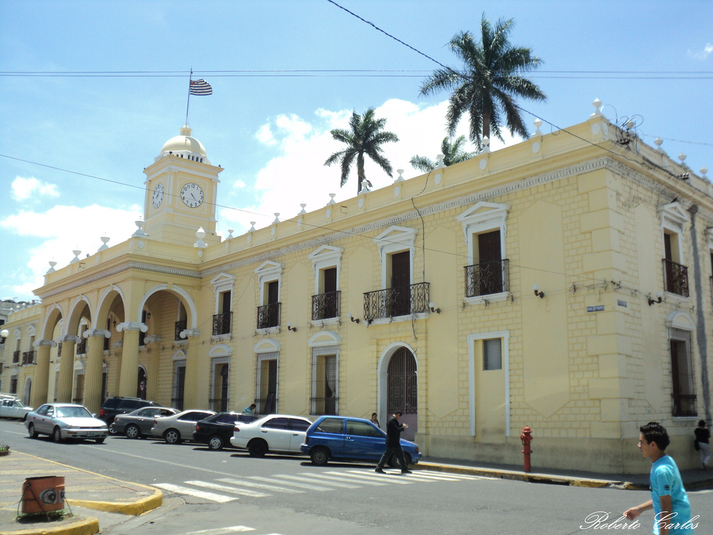

Santa Ana
Santa Ana es la ciudad principal de la zona occidental del país y segunda
ciudad en importancia del país, ubicada a 64 km de la capital estatal, San Salvador.
El municipio de Santa Ana tiene una población estimada de 264.091 habitantes
para el año 2013, ocupando el segundo lugar en población. Para su administración
se divide en 34 cantones y 312 caseríos, mientras que la propia ciudad se
divide en 12 barrios y varias colonias.

Datos Basicos
La localidad celebra sus fiestas patronales durante las "Fiestas Julias",
del 17 al 26 de julio, en homenaje a la Señora Santa Ana, patrona del departamento.
Aunque hay registros arqueológicos que datan del período preclásico, la ciudad
fue fundada alrededor del siglo V o VI, por los mayas, para luego ser ocupada
por los pipiles, los cuales le dieron el nombre de Sihuatehuacan. Fue conquistada
por los españoles durante el siglo XVI, y posteriormente perteneció a la
Alcaldía Mayor de San Salvador y luego a la Intendencia de San Salvador.
Ha formado parte del Estado salvadoreño, tanto en su etapa federal, como
independiente.

El clima de Santa Ana están ubicados en los trópicos y están localizados en la zona
climática de Sabana Tropical caliente o tierra caliente (según la Clasificación climática de Köppen).
Por lo tanto cuenta con un clima cálido semihúmedo que presentan dos estaciones
claramente diferenciadas, las cuales son: la estación seca (de noviembre a mayo)
y la estación lluviosa de (mayo a noviembre).